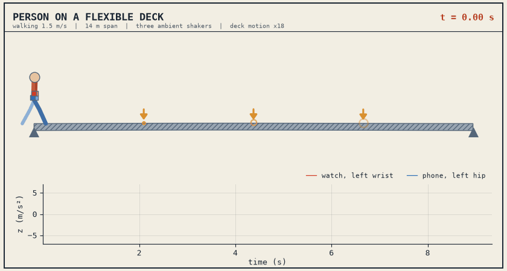

A person carries a smartwatch and a smartphone across a flexible deck. The model solves the person and the deck together and records what the devices measure.
| Paper | Babazade and Lüleci, under review |
|---|---|
| Deck | OpenSeesPy, simply supported |
| Person | 15 DOF, walking or standing |
| Devices | triaxial, wrist and hip |
| By | J. Babazade, LSU |

Ten parameters, every pair already simulated. Sweep one and compare the deck with the two devices. Click a deck peak to see its mode shape and whether each device found it. Gait lines and the observability index of every mode are shown with it.
The baseline deck. Deck motion is exaggerated, the person is to scale.
Source, data and run instructions: github.com/covdetbaba/human-carried-indirect-sensing